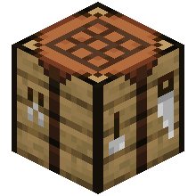
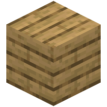
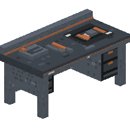
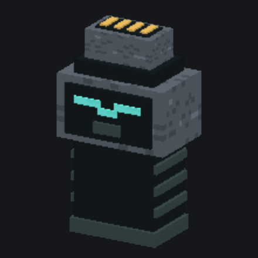

HomeCore 1.14.0
Shared API for the devices and networks of a Minecraft base. HomeCore depends on no consumer mod: Dashboard, Energy, Furnace, Quarry, Farm, Storage and Tasks use its contracts without it knowing their implementations.
Role#
HomeCore defines the shared contracts (fr.lkdm.homecore.api.*) that any mod can implement or consume:
- DashboardDevice: a logical device (block, machine, system) identified by a stable UUID.
- DeviceMetric: a value exposed by the device (temperature, energy, progress…), with a refresh frequency (REALTIME, FAST, NORMAL, SLOW, STATIC).
- DeviceAction: an action triggerable remotely (button, slider), protected by permission.
- DeviceEvent: an event published on a state transition (alert, completion…), consumable by subscription.
- HomeNetwork: a persistent network grouping devices and players with roles.
Permissions#
| Role | Default permissions |
|---|---|
| OWNER | All recognized permissions |
| ADMIN | VIEW, CONTROL, AUTOMATE, CONFIGURE, MANAGE_NETWORK |
| MEMBER | VIEW, CONTROL, AUTOMATE |
| VIEWER | VIEW |
Each device checks network membership, a CONTROL/specific permission, ONLINE state and parameter validity before running an action. A limit of 10 requests per player, refilled at 10/s, guards against abuse.
HomeLink electronics workbench#
homecore:electronics_workbench is the assembly station shared by every HomeLink mod. It occupies 2 blocks, consumes neither energy nor fuel, and crafts the four base electronic components:
| Component | ID | Role |
|---|---|---|
| Circuit Board | homecore:homelink_circuit_board | Base electronics |
| Microprocessor | homecore:homelink_microprocessor | Processing and logic |
| Communication Module | homecore:homelink_communication_module | Communication, networking, detection |
| Control Module | homecore:homelink_control_module | Machine control and automation |
These IDs are stable: consumer mods can reference them directly without depending on one another.
Recipes#
The workbench is crafted at the vanilla table. The four components are crafted inside the electronics workbench (shapeless recipe: a list of ingredients with amounts, no fixed grid). The 3×3 grid below applies only to the workbench itself.
Icons: 3D render of the blocks, as in the inventory; items (ingots, components…) keep their real texture.



| Component (workbench) | Ingredients | Result |
|---|---|---|
| Circuit Board |
|
|
| Microprocessor |
|
|
| Communication Module |
|
|
| Control Module |
|
HomeLink connector#
homecore:homelink_connector is the common tool for binding a device to a HomeNetwork. It works with any device discovered by a HomeCore provider and implementing NetworkMember: it is therefore the same tool for Farm, Quarry, Storage or Dashboard machines.
| Action | Effect |
|---|---|
| Click in the air | Cycles through the networks the player can administer; the selected network is shown in the message. |
| Click on a device | Binds that device to the selected network. |
| Sneak + click a bound device | Selects that device's network. |
| Sneak + click in the air | Clears the tool's selection (detaches no device). |
The selection is kept on the item and permissions are rechecked on every use. The connector calls DashboardAPI.bindDevice(): it requires the right to configure the machine and MANAGE_NETWORK on both the target network and the previous one. A denial keeps the existing binding. The machine's owner is not transferred with its binding.
Each mod's specialized tools remain useful for their own associations (crop zones, mining area). The energy cables of HomeLink Energy and item ports are physical connections, distinct from the HomeNetwork.
The icon below is a 3D render of the connector, as in the inventory. Crafted at the vanilla table, on a 2 × 2 grid.

Persistent networks#
HomeNetworks are saved in the Overworld's SavedData and shared across dimensions. Device UUIDs survive restarts. Three link states are available to consumers: CONNECTED, UNREACHABLE, OFFLINE. HomeCore computes no radio range: that logic belongs to each mod (see Dashboard for its repeater system).
Install / build#
./gradlew.bat clean build test javadoc
./gradlew.bat runClientThe JAR is produced in build/libs; install homecore-1.14.0.jar on both client and server. To develop a consumer mod, first publish HomeCore locally with ./gradlew.bat publishToMavenLocal.
Gallery#
In-game captures. Click to enlarge.